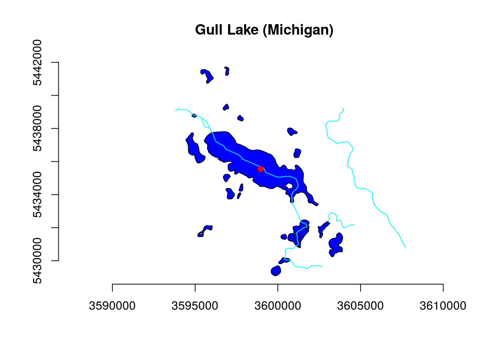

library(wikilake)
library(sf)
library(nhdR)
gull_meta <- wikilake::lake_wiki("Gull Lake (Michigan)")
gull_point <- st_sfc(st_point(c(gull_meta$Lon, gull_meta$Lat)))
gull_buff <- st_sfc(st_buffer(gull_point, dist = 0.05))
st_crs(gull_point) <- st_crs(gull_buff) <- 4326 #wgs84 epsg
gull_point <- st_transform(gull_point, crs = "+proj=utm +zone=10 +datum=WGS84")
gull_buff <- st_transform(gull_buff, crs = "+proj=utm +zone=10 +datum=WGS84")wb <- nhd_plus_load(vpu = 4, component = "NHDWaterbody")
fl <- nhd_plus_load(vpu = 4, component = "NHDFlowLine")
st_crs(wb) <- st_crs(fl) <- 4269
wb <- st_transform(wb, crs = "+proj=utm +zone=10 +datum=WGS84")
fl <- st_transform(fl, crs = "+proj=utm +zone=10 +datum=WGS84")
wb_intersecting <- unlist(lapply(st_intersects(wb, gull_buff), length)) > 0
wb_sub <- st_geometry(wb[wb_intersecting,])
fl_intersecting <- unlist(lapply(st_intersects(fl, gull_buff), length)) > 0
fl_sub <- st_geometry(fl[fl_intersecting,])plot(wb_sub$geometry, col = "blue", main = "Gull Lake (Michigan)")
plot(fl_sub$geometry, add = TRUE, col = "cyan")
plot(gull_point, col = "red", pch = 19, add = TRUE)
axis(1); axis(2)